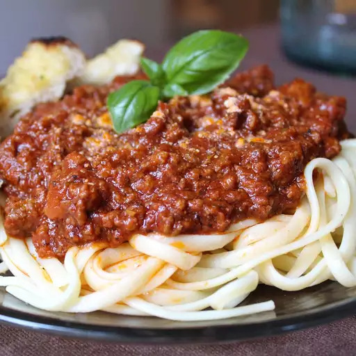

Home
Spaghetti Sauce

Description
A simple spaghetti sauce made with sautéed garlic and onions, simmered
tomatoes, olive oil, and Italian herbs like basil and oregano. Perfect
over pasta and ready in about 30 minutes.
Ingredients
- Olive oil
- Garlic
- Onion
- Canned crushed tomates (or fresh tomatoes)
- Salt
- Black pepper
- Dried basil
- Dried oregano
- Sugar (to balance acidity)
Steps
- Heat olive oil in a pan over medium heat.
-
Add minced garlic and chopped onion, sauté until soft and fragrant
(about 3-4 minutes).
- Pour in crushed tomatoes and stir.
-
Season with salt, pepper, dried basil, oregano, and optional red pepper
flakes.
-
Let the sauce simmer gently for 20-25 minutes, stirring occasionally.
- Taste and add a pinch of sugar if the sauce is too acidic.
- Serve hot over cooked spaghetti.